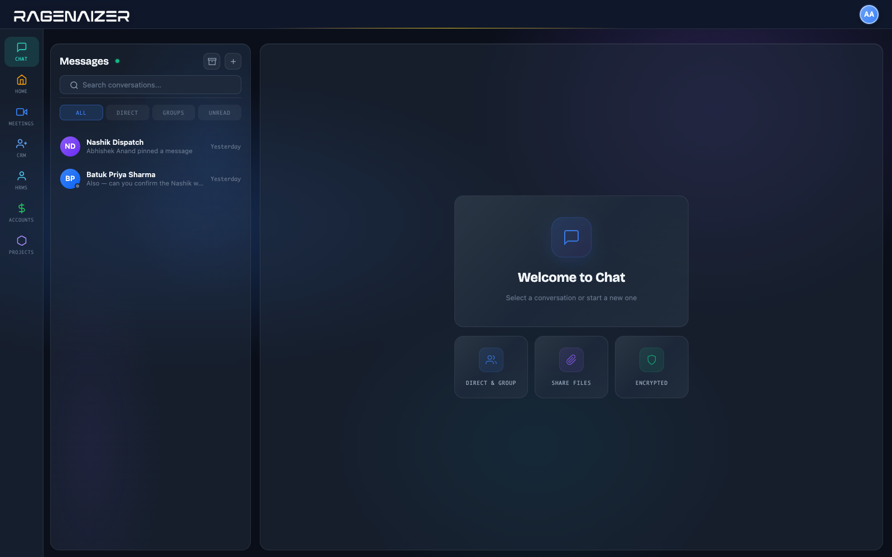

Every team already has somewhere to type. What they do not have is somewhere the answer stays findable six weeks later — pinned to the conversation, next to the file, in the same workspace as the project it was about.
What a conversation here holds on to
Conversations, filters for the ones you have not read, and search across them — with everything else your team uses one click away in the same rail.

The things a working team needs from chat. Not an app platform, not a marketplace, not a second inbox to keep on top of.
Because it belongs to whoever's phone it is on. When that person leaves, the conversation and the customer's number leave with them — and there is no way to hand a client thread over to somebody else.
Pin it when it is made, and it stays at the top of the conversation for everyone. Failing that, search inside the conversation for what you remember somebody saying.
Yes — a video call starts from the conversation, and the call history stays on it afterwards, so "we discussed this on a call" has a timestamp attached.
Onto the conversation, in the same workspace as everything else — so the file and the discussion about it are not in two different products.
Yes. Participants carry roles within a conversation, and adding or removing people is a recorded action rather than something that quietly happens.
No. Chat is one of the apps in the seat block, on the same login as your CRM, projects and books — which is the point of it being here rather than bought separately.
One place your team talks, where the answer is still findable when the person who gave it has moved on.
This is one module of the business OS, not a point tool. The same seat opens Meetings, Mail, Chat, Drive, CRM, HR, Accounts, Projects, Procurement, Learning and Research — eleven modules covering about twenty-eight products' worth, on one login, one permission model and one ledger. You are not buying a chat app; you are putting the company on one system.